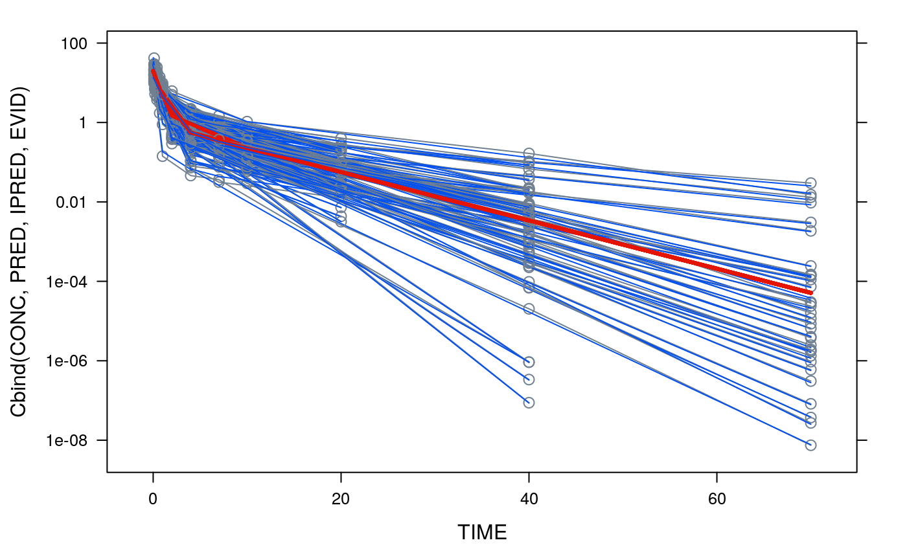
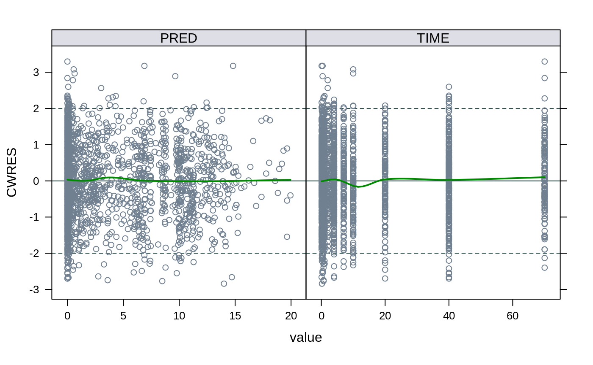
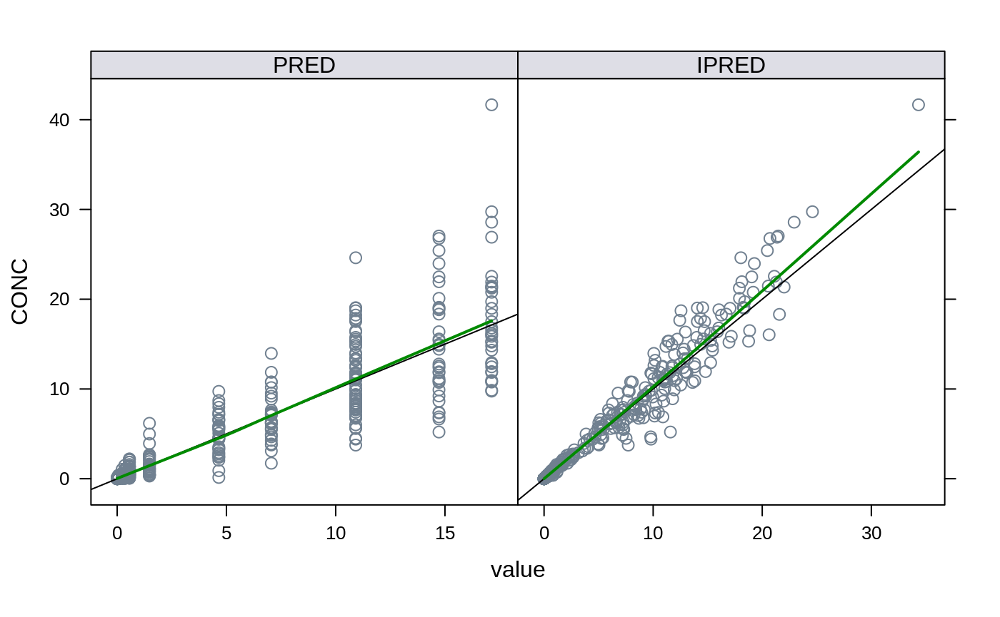
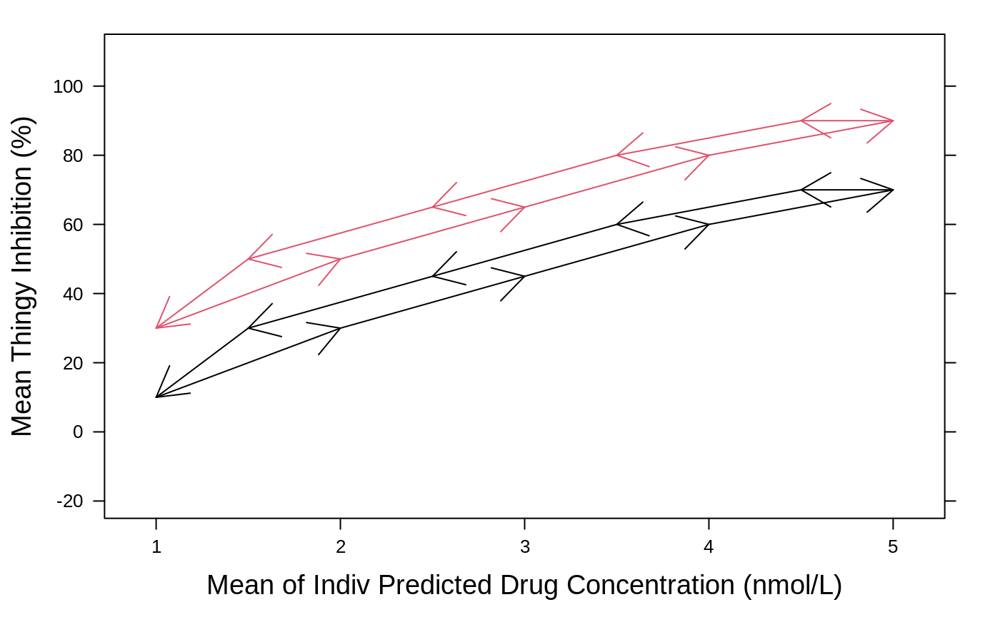
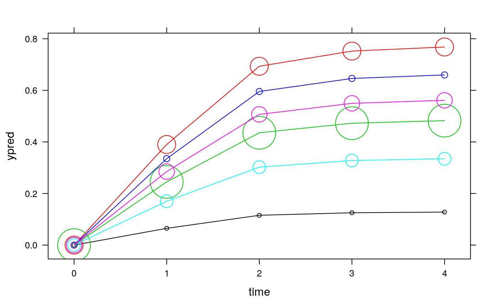
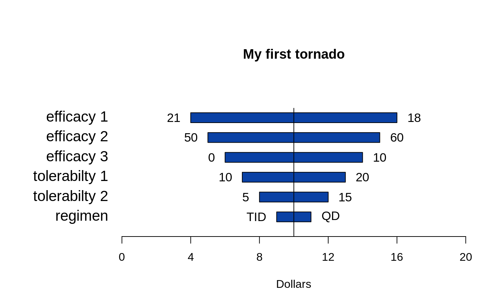
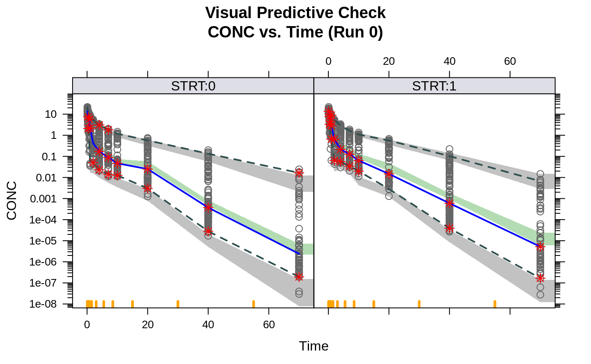
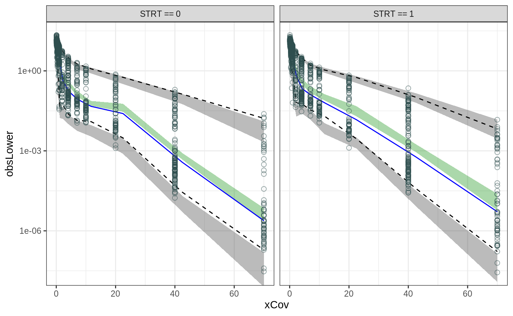
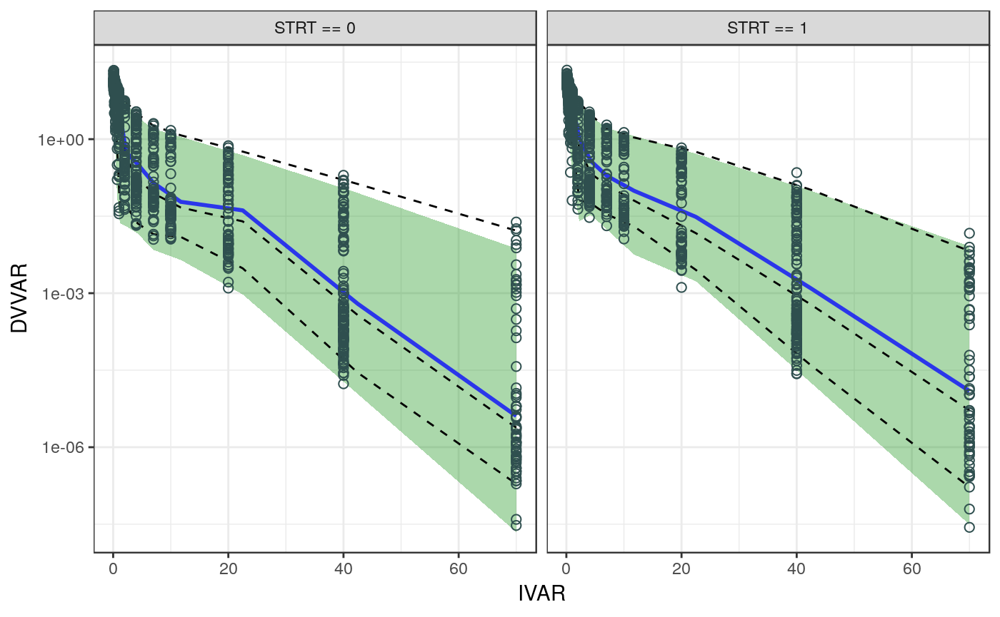
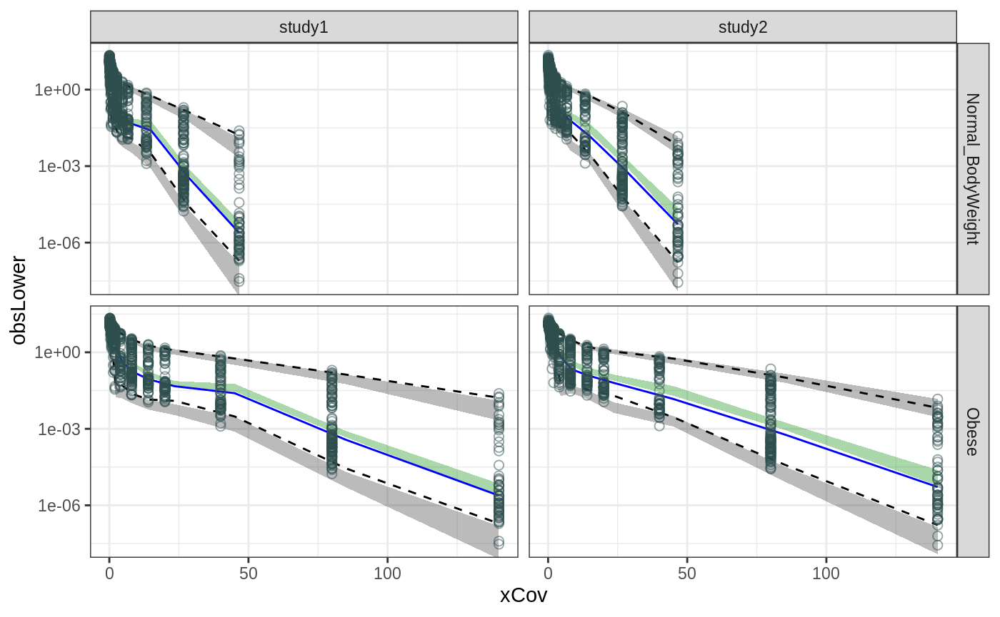

qpToolkit Plotting Tips
Klaas Prins
2020-06-01
qpToolkitPlottingTips.RmdKick off by creating some play data with PK and PD data.
pkpdData = example.pkpdData()
example panel functions
example("panel.thalf")
##
## pnl.th> library(lattice)
##
## pnl.th> pkpdData = example.pkpdData()
##
## pnl.th> pkpdData$blq = 0
##
## pnl.th> pkpdData$blq[pkpdData$type == "PK"&pkpdData$value<0.1] = 1
##
## pnl.th> xyplot(value ~ time | id
## pnl.th+ , data = subset(pkpdData, blq == 0)
## pnl.th+ , subset = type == "PK" & dose == 100 & value > 1e-6
## pnl.th+ , groups = id
## pnl.th+ , panel = function(x,y, ...)
## pnl.th+ {
## pnl.th+ panel.xyplot(x,y,..., col = "gray", pch = 18, type = "b", cex = 1)
## pnl.th+ sel = length(x)
## pnl.th+ sel = seq(sel-3,sel)
## pnl.th+ panel.thalf(x[sel],y[sel],...,lwd = 2)
## pnl.th+ lpoints(x,y, col = steel)
## pnl.th+ }
## pnl.th+ , scales = list(y = list(log = 10))
## pnl.th+ , yscale.components = yscale.components.log10
## pnl.th+ )## Warning in grid.Call.graphics(C_points, x$x, x$y, x$pch, x$size): pch value
## '189' is invalid in this locale
## Warning in grid.Call.graphics(C_points, x$x, x$y, x$pch, x$size): pch value
## '189' is invalid in this locale
## Warning in grid.Call.graphics(C_points, x$x, x$y, x$pch, x$size): pch value
## '189' is invalid in this locale
## Warning in grid.Call.graphics(C_points, x$x, x$y, x$pch, x$size): pch value
## '189' is invalid in this locale
## Warning in grid.Call.graphics(C_points, x$x, x$y, x$pch, x$size): pch value
## '189' is invalid in this locale
## Warning in grid.Call.graphics(C_points, x$x, x$y, x$pch, x$size): pch value
## '189' is invalid in this locale
## Warning in grid.Call.graphics(C_points, x$x, x$y, x$pch, x$size): pch value
## '189' is invalid in this locale
## Warning in grid.Call.graphics(C_points, x$x, x$y, x$pch, x$size): pch value
## '189' is invalid in this locale
## Warning in grid.Call.graphics(C_points, x$x, x$y, x$pch, x$size): pch value
## '189' is invalid in this locale
## Warning in grid.Call.graphics(C_points, x$x, x$y, x$pch, x$size): pch value
## '189' is invalid in this locale
## Warning in grid.Call.graphics(C_points, x$x, x$y, x$pch, x$size): pch value
## '189' is invalid in this locale
## Warning in grid.Call.graphics(C_points, x$x, x$y, x$pch, x$size): pch value
## '189' is invalid in this locale
## Warning in grid.Call.graphics(C_points, x$x, x$y, x$pch, x$size): pch value
## '189' is invalid in this locale
## Warning in grid.Call.graphics(C_points, x$x, x$y, x$pch, x$size): pch value
## '189' is invalid in this locale
## Warning in grid.Call.graphics(C_points, x$x, x$y, x$pch, x$size): pch value
## '189' is invalid in this locale
## Warning in grid.Call.graphics(C_points, x$x, x$y, x$pch, x$size): pch value
## '189' is invalid in this locale
## Warning in grid.Call.graphics(C_points, x$x, x$y, x$pch, x$size): pch value
## '189' is invalid in this locale
## Warning in grid.Call.graphics(C_points, x$x, x$y, x$pch, x$size): pch value
## '189' is invalid in this locale
## Warning in grid.Call.graphics(C_points, x$x, x$y, x$pch, x$size): pch value
## '189' is invalid in this locale
## Warning in grid.Call.graphics(C_points, x$x, x$y, x$pch, x$size): pch value
## '189' is invalid in this locale
## Warning in grid.Call.graphics(C_points, x$x, x$y, x$pch, x$size): pch value
## '189' is invalid in this locale
## Warning in grid.Call.graphics(C_points, x$x, x$y, x$pch, x$size): pch value
## '189' is invalid in this locale
## Warning in grid.Call.graphics(C_points, x$x, x$y, x$pch, x$size): pch value
## '189' is invalid in this locale
## Warning in grid.Call.graphics(C_points, x$x, x$y, x$pch, x$size): pch value
## '189' is invalid in this locale
## Warning in grid.Call.graphics(C_points, x$x, x$y, x$pch, x$size): pch value
## '189' is invalid in this locale
## Warning in grid.Call.graphics(C_points, x$x, x$y, x$pch, x$size): pch value
## '189' is invalid in this locale
## Warning in grid.Call.graphics(C_points, x$x, x$y, x$pch, x$size): pch value
## '189' is invalid in this locale
## Warning in grid.Call.graphics(C_points, x$x, x$y, x$pch, x$size): pch value
## '189' is invalid in this locale
## Warning in grid.Call.graphics(C_points, x$x, x$y, x$pch, x$size): pch value
## '189' is invalid in this locale
## Warning in grid.Call.graphics(C_points, x$x, x$y, x$pch, x$size): pch value
## '189' is invalid in this locale
## Warning in grid.Call.graphics(C_points, x$x, x$y, x$pch, x$size): pch value
## '189' is invalid in this locale
## Warning in grid.Call.graphics(C_points, x$x, x$y, x$pch, x$size): pch value
## '189' is invalid in this locale
example("panel.modelfit")
##
## pnl.md> library(Hmisc)## Loading required package: survival## Loading required package: Formula## Loading required package: ggplot2##
## Attaching package: 'Hmisc'## The following objects are masked from 'package:base':
##
## format.pval, units##
## pnl.md> out = get.xpose.tables('example1',getOption('qpExampleDir'))
##
## pnl.md> out$EVID = 0
##
## pnl.md> trellis.strip.color()
##
## pnl.md> xyplot(Cbind(CONC,PRED,IPRED,EVID) ~ TIME
## pnl.md+ , groups = ID
## pnl.md+ , data = subset(out)
## pnl.md+ , scales = list(x = list(relation = 'free'),y = list(log = 10))
## pnl.md+ , panel = panel.modelfit
## pnl.md+ , logY = TRUE
## pnl.md+ , yscale.components = yscale.components.log10
## pnl.md+ )
example("panel.cwres")
##
## pnl.cw> library(lattice)
##
## pnl.cw> library(reshape2)
##
## pnl.cw> out = get.xpose.tables("example2", getOption("qpExampleDir"))
##
## pnl.cw> trellis.strip.color()
##
## pnl.cw> xyplot(CWRES ~ value | variable
## pnl.cw+ , data = subset(reshape2::melt(out, measure.vars = c('PRED','TIME')),EVID == 0)
## pnl.cw+ , aspect = 1
## pnl.cw+ , scales = list(x = list(relation = "free"))
## pnl.cw+ , panel = panel.cwres,
## pnl.cw+ family = 'symmetric'
## pnl.cw+ )
example("panel.residual")
##
## pnl.rs> library(lattice)
##
## pnl.rs> library(reshape2)
##
## pnl.rs> trellis.strip.color()
##
## pnl.rs> xyplot(CONC ~ value | variable
## pnl.rs+ , data = subset(
## pnl.rs+ reshape2::melt(
## pnl.rs+ get.xpose.tables('example1', getOption('qpExampleDir')
## pnl.rs+ )
## pnl.rs+ , measure.vars = c('PRED','IPRED')
## pnl.rs+ ), EVID == 0)
## pnl.rs+ , subset = EVID == 0
## pnl.rs+ , aspect = 1
## pnl.rs+ , scales = list(x = list(relation = 'free'))
## pnl.rs+ , panel = panel.residual
## pnl.rs+ )
example("panel.superpose.arrows")
##
## pnl.s.> library(lattice)
##
## pnl.s.> pat.1.avg.cdin = c(.1,.3,.45,.6,.7,.7,.6,.45,.3,.1)
##
## pnl.s.> pat.1.avg.cp.ipred = c(1,2,3,4,5,4.5,3.5,2.5,1.5,1)
##
## pnl.s.> pat.2.avg.cdin = c(.1,.3,.45,.6,.7,.7,.6,.45,.3,.1) + .2
##
## pnl.s.> pat.2.avg.cp.ipred = c(1,2,3,4,5,4.5,3.5,2.5,1.5,1)
##
## pnl.s.> plot.ds = data.frame(
## pnl.s.+ id = rep(c(1,2),each = 10),
## pnl.s.+ avg.cdin = c(pat.1.avg.cdin,pat.2.avg.cdin),
## pnl.s.+ avg.cp.ipred = c(pat.1.avg.cp.ipred,pat.2.avg.cp.ipred)
## pnl.s.+ )
##
## pnl.s.> trellis.strip.color()
##
## pnl.s.> plot(xyplot(avg.cdin*100 ~ avg.cp.ipred,
## pnl.s.+ plot.ds,
## pnl.s.+ groups = id,
## pnl.s.+ panel = panel.superpose.arrows,
## pnl.s.+ ylim = c(-25,115),
## pnl.s.+ scales = list(x = list(relation = "free")),
## pnl.s.+ as.table = TRUE,
## pnl.s.+ xlab = list("Mean of Indiv Predicted Drug Concentration (nmol/L)", cex = 1.2),
## pnl.s.+ ylab = list("Mean Thingy Inhibition (%)", cex = 1.2)
## pnl.s.+ ))
example("panel.superpose.bubble")
##
## pnl.s.> library(lattice)
##
## pnl.s.> myData = data.frame( n = c(5,100,332,12,50,74)
## pnl.s.+ , value = c(0.13,0.78,0.49,0.67,0.34,0.57)
## pnl.s.+ , dose = c(20,25,50,30,40,35)
## pnl.s.+ , sex = rep(c("M","F"), ea = 3)
## pnl.s.+ )
##
## pnl.s.> myData = expand.data(myData, values = c(0,1,2,3,4), name = "time")
##
## pnl.s.> myData$ypred = myData$value * myData$time ^3/(1 + myData$time^3)
##
## pnl.s.> xyplot(ypred ~ time
## pnl.s.+ , data = myData
## pnl.s.+ , groups = dose
## pnl.s.+ , subscripts = TRUE
## pnl.s.+ , nn = sqrt(myData$n/10)
## pnl.s.+ , panel = function(x,y, nn = nn, groups, subscripts,...)
## pnl.s.+ {
## pnl.s.+ panel.superpose.bubble(x,y,nn, groups, subscripts, ...)
## pnl.s.+ }
## pnl.s.+ )
example("plot.tornado")
##
## plt.tr> torn.ds = as.tornado(read.csv(
## plt.tr+ file.path(getOption("qpExampleDir"), "../Excel/tornado.ds.csv")
## plt.tr+ , stringsAsFactors = FALSE))
##
## plt.tr> plot(torn.ds
## plt.tr+ , xlim = c(0,20)
## plt.tr+ , xlab = "Dollars"
## plt.tr+ , main = "My first tornado"
## plt.tr+ , cex.main = 2
## plt.tr+ , bar.width =.50
## plt.tr+ , base.round = 1
## plt.tr+ , show.base = FALSE
## plt.tr+ )
example VPC plot using xpose4
example.xpose.VPC()## xpose.VPC(file.path(getOption('nmDir'),'vpc1/vpc_results.csv')
## , file.path(getOption('nmDir'),'vpc1/vpctab1')
## , logy = TRUE
## , by ='STRT'
## , col = grey(0.4), cex = 1
## , PI.ci.area.smooth = TRUE
## , PI.real.med.col = PI.real.med.col
## , PI.real.down.col = PI.real.down.col
## , PI.real.up.col = PI.real.up.col
## , PI.ci.down.arcol = PI.ci.down.arcol
## , PI.ci.up.arcol = PI.ci.up.arcol
## )library(xpose4) xpose.VPC( system.file(package = 'qpToolkit','NONMEM/vpc_final_strt/vpc_results.csv'), system.file(package = 'qpToolkit','NONMEM/vpc_final_strt/vpctab'), logy=T,, by='STRT', col=grey(0.4), cex = 1, PI.ci.area.smooth = T, PI.ci.med.arcol = PI.ci.med.arcol, PI.real.med.col = PI.real.med.col, PI.real.down.col = PI.real.down.col, PI.real.up.col = PI.real.up.col, PI.ci.down.arcol = PI.ci.down.arcol, PI.ci.up.arcol = PI.ci.up.arcol )

example VPC plot using qPharmetra’s ggvpc
vpc = nm.read.vpc(system.file(package = 'qpToolkit','/NONMEM/vpc_final_strt'), PI.ci.area.smooth=T) ggvpc_xpose(vpc, point.size = 2) + facet_grid(~strata) + scale_y_log10()

ggvpc_standard(vpc, point.size = 2) + facet_grid(~strata) + scale_y_log10()

ggvpc functions can plot by multiple gropuping levels in ‘facet_grid’ mode
Since we do not have data available, we quickly scramble some data, duplicate and tweak it
vpc = nm.read.vpc(system.file(package = 'qpToolkit','/NONMEM/vpc_final_strt'), PI.ci.area.smooth=T) vpc = lapply(vpc, function(x) expand.data(x, values=1:2,name = "pat.class")) vpc$obs$TIME[vpc$obs$pat.class==1] = vpc$obs$TIME[vpc$obs$pat.class==1]/0.5 vpc$res$xCov[vpc$res$pat.class==1] = vpc$res$xCov[vpc$res$pat.class==1]/0.5 vpc$vpc$xCovm[vpc$vpc$pat.class==1] = vpc$vpc$xCovm[vpc$vpc$pat.class==1]/0.5 vpc$obs$TIME[vpc$obs$pat.class==2] = vpc$obs$TIME[vpc$obs$pat.class==2]/1.5 vpc$res$xCov[vpc$res$pat.class==2] = vpc$res$xCov[vpc$res$pat.class==2]/1.5 vpc$vpc$xCovm[vpc$vpc$pat.class==2] = vpc$vpc$xCovm[vpc$vpc$pat.class==2]/1.5 vpc = lapply(vpc, function(x) { x$pat.class = swap(x$pat.class, sunique(x$pat.class), Cs(Obese,Normal_BodyWeight)) return(x)} ) vpc = lapply(vpc, function(x) { x$strata = swap(x$strata, sunique(x$strata), Cs(study1,study2)) return(x)} ) ggvpc_xpose(vpc, point.size = 2) + facet_grid(pat.class~strata) + scale_y_log10()

plot histograms of bootstrap results
example("histogram.bootstrap")
##
## hstgr.> myBoot = read.bootstrap(path = getOption("qpExampleDir"),
## hstgr.+ filename = "bootstrap/raw_results_bs4011.csv",
## hstgr.+ structure.filename = "bootstrap/raw_results_structure")
## read 1000 bootstrap replicates
##
## hstgr.> temp.dir = tempdir()
##
## hstgr.> cat(temp.dir)
## /tmp/RtmpmR8oYQ
## hstgr.> histogram.bootstrap(myBoot, path = temp.dir, filename.prefix = "Test")## png
## 2
##
## hstgr.> ## now take a look there
## hstgr.>
## hstgr.>
## hstgr.>Now check out the temp directory printed above.
create parameter table of bootstrap results
example("bootstrap.ParTab")
##
## bts.PT> myBoot = read.bootstrap(
## bts.PT+ path = getOption("qpExampleDir"),
## bts.PT+ filename = "bootstrap/raw_results_bs4011.csv",
## bts.PT+ structure.filename = "bootstrap/raw_results_structure"
## bts.PT+ )
## read 1000 bootstrap replicates
##
## bts.PT> bootstrap.ParTab(myBoot, idx = list(theta = 1:13,omega = 1:7,sigma = 1))
## Parameter Descriptor Orig.Estimate Estimate CI95 transformed
## 1 THETA1 X1..BASE.979 3.77 3.77 3.74 - 3.80 no
## 2 THETA2 X2..BASE.961 5.46 5.46 5.41 - 5.50 no
## 3 THETA3 X3..BASE.962 6.11 6.11 6.05 - 6.16 no
## 4 THETA4 X4..BASE.967 5.34 5.34 5.29 - 5.39 no
## 5 THETA5 X5..BASE.9712 6.33 6.33 6.30 - 6.37 no
## 6 THETA6 X6..BASE.973 2.96 2.96 2.94 - 2.98 no
## 7 THETA7 X7..BASE.985 3.88 3.88 3.84 - 3.91 no
## 8 THETA8 X8..PROP.ERR 0.118 0.118 0.114 - 0.123 no
## 9 THETA9 X9..ADD.ERR 0.00 0.00 0.00 - 0.00 no
## 10 THETA10 X10.KOUT -3.78 -3.75 -4.01 - -3.36 no
## 11 THETA11 X11.LGK10 -4.55 -4.56 -4.71 - -4.37 no
## 12 THETA12 X12.LGKZERO -5.40 -5.40 -5.40 - -5.40 no
## 13 THETA13 X13.LGEMAX 0.312 0.310 0.142 - 0.476 no
## 14 THETA14 X14.LGEC50 7.78 7.77 7.45 - 8.10 no
## 15 THETA15 X15.HVMX 0.630 0.645 0.412 - 0.878 no
## 16 THETA16 X16.ST979MX -0.615 -0.608 -0.778 - -0.444 no
## 17 THETA17 X17.HVKOUT 0.911 0.871 0.519 - 1.16 no
## 18 THETA18 X1.SD.BASE. 0.0133 0.0131 0.0108 - 0.0152 no
## 19 THETA19 X2.SD.KOUT. 0.567 0.542 0.238 - 0.793 no
## 20 THETA20 X3.SD.K10. 0.00 0.00 0.00 - 0.00 no
## 21 THETA21 X4.SD.KZERO. 0.00 0.00 0.00 - 0.00 no
## 22 THETA22 X5.SD.EMAX. 0.268 0.266 0.183 - 0.373 no
## 23 THETA23 X6.SD.EC50. 0.00 0.00 0.00 - 0.00 no
## 24 THETA24 X7.SD.EPS. 0.102 0.104 0.0785 - 0.134 no
##
## bts.PT> bootstrap.ParTab(myBoot, idx = list(theta = 1:13,omega = 1:7,sigma = 1))[c(13,14,15),]
## Parameter Descriptor Orig.Estimate Estimate CI95 transformed
## 13 THETA13 X13.LGEMAX 0.312 0.310 0.142 - 0.476 no
## 14 THETA14 X14.LGEC50 7.78 7.77 7.45 - 8.10 no
## 15 THETA15 X15.HVMX 0.630 0.645 0.412 - 0.878 no
##
## bts.PT> bootstrap.ParTab(myBoot, idx = list(theta = 1:13,omega = 1:7,sigma = 1),
## bts.PT+ transformations = list(log = 13:14, logit = 15))[c(13,14,15),] # partly fictional
## Parameter Descriptor Orig.Estimate Estimate CI95 transformed
## 13 THETA13 X13.LGEMAX 1.37 1.36 1.15 - 1.61 log
## 14 THETA14 X14.LGEC50 2.38e+03 2.37e+03 1.71e+03 - 3.28e+03 log
## 15 THETA15 X15.HVMX 0.652 0.656 0.602 - 0.706 logit